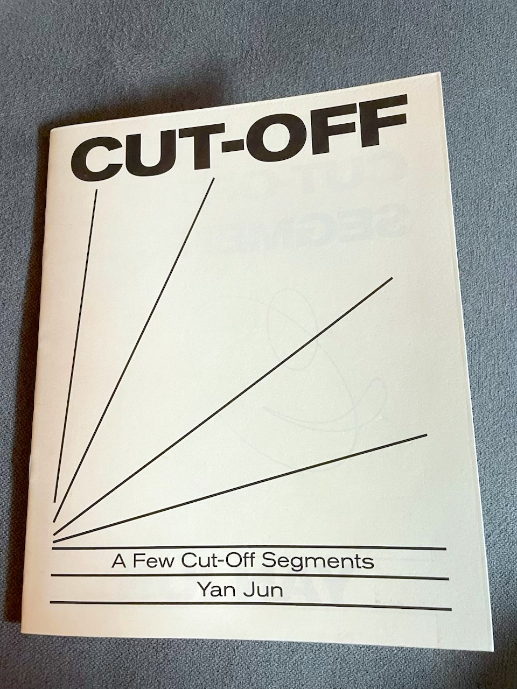

$15
Digital Audio + PDF Zine
With writing from yan jun
$25
CD + Riso Printed Zine + Digital Audio + PDF

A riso printed copy of the PP-11 "cut-off" zine.
The CD comes in a sleeve within the zine.
cut off - yan jun
a personal history of the cut-off
photo (cds): uta wang
photo (art): zhang congxin
art: yan jun, "cut-off";
oil on canvas; 210 x 480cm; 2024
track 1-4 recorded by yan jun with assistance of uta wang;
studio h; august 16, 2018
track 5 reocrded by yan jun with assistance of ciaociao;
basement car park; march 25, 2019
Your browser does not support the audio element.
Your browser does not support the audio element.
Your browser does not support the audio element.
Feburary 7th 2025
Mastering - Eli Crews
Design - Secret Riso Club